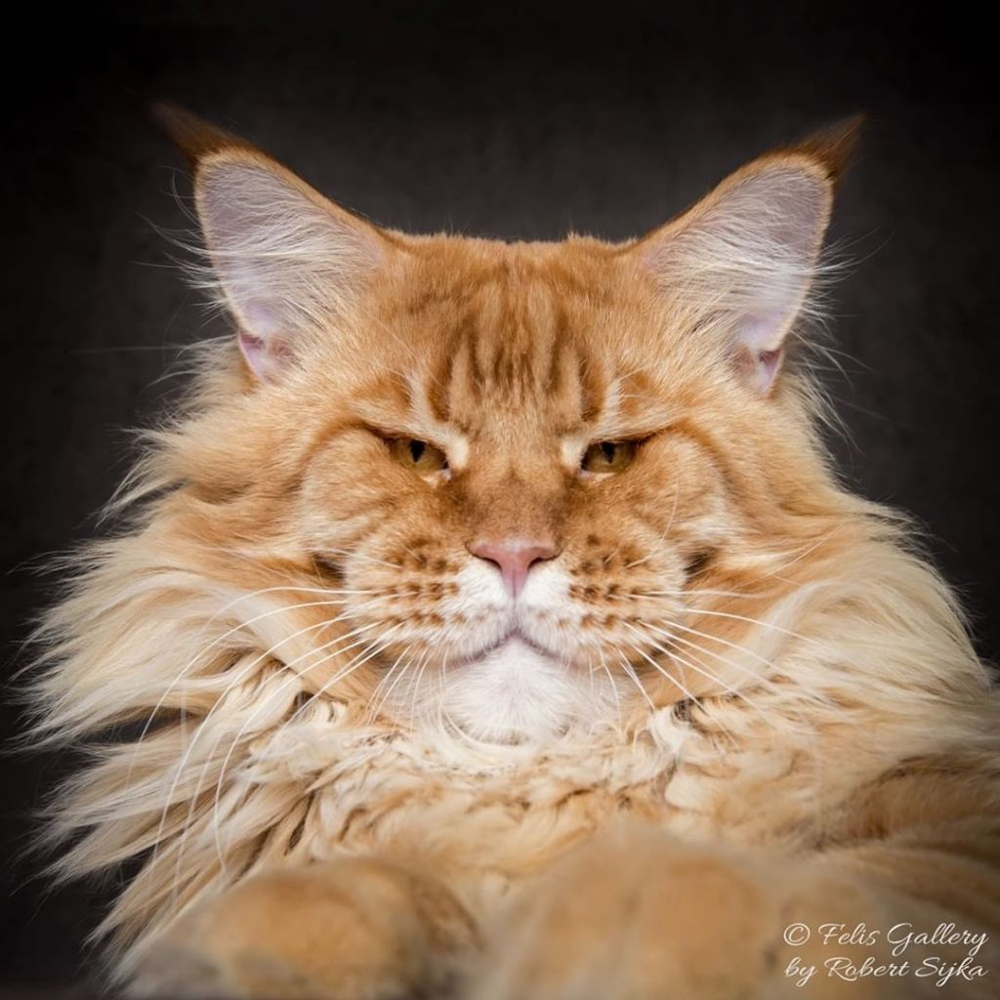
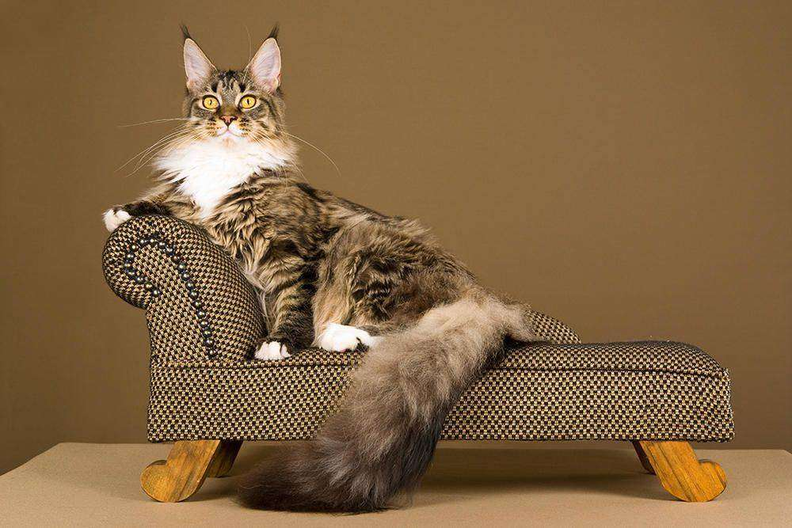
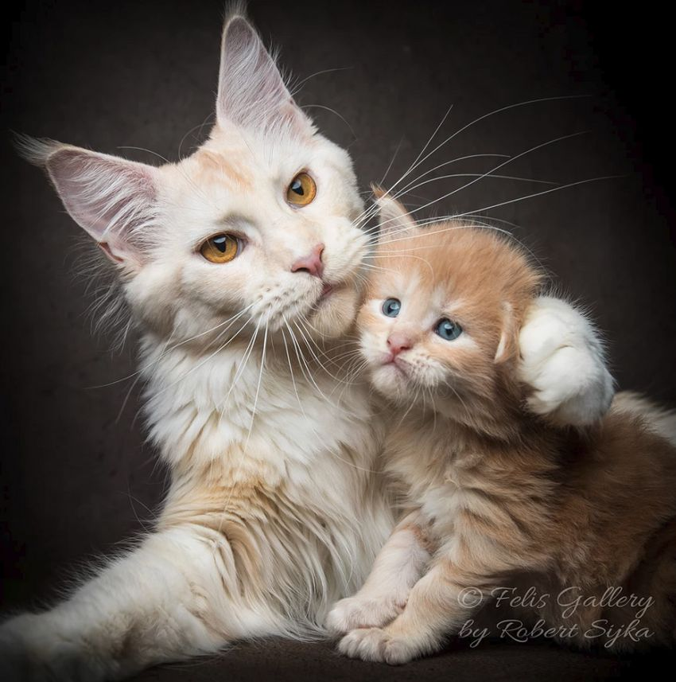

СОДЕРЖАНИЕ
Мейн-кун – это удивительная порода кошачьего семейства, которая была выведена около 150 лет назад. Эта порода отличается от своих сородичей крупными размерами и нестандартным внешним видом.
Описание и характер
Мейн-кун относится к классу длинношерстных кошек. Взрослый самец этой особи в весе достигает 11-15 кг, а самка 6-10кг. Развитие у этих животных протекает достаточно медленно и зрелый возраст у породы принято считать 4-5 лет.
Голова мейн-куна имеет форму трапеции. Уши, подобно рыси, имеют кисточки на кончиках. Тело животного очень мускулистое, в длину может быть полтора метра. Шея стандартной длины, грудная клетка массивная, что придает животному мужественность. Лапы мейн-куна крупные, а между пальцами шерстяные клоки. Хвост у этой породы длинный и пушистый, чаще всего полосатый.Глаза чистокровного мейн-куна имеют любой оттенок желтого или зеленого, их форма – овальная. Волосяной покров у кошек мейн-куна очень густой, а волоски – длинные. Окраска кошки может быть разнообразная как светлая, так и темная. Продолжительность их жизни в среднем составляет от 12 до 20 лет.
Помимо привлекательных внешних данных, мейн-кун обладает очень дружелюбным характером. Эти животные очень умные и интеллигентные, они восприимчивы к интонации, что делает воспитание и дрессировку мейн-куна очень легкой. Мейн-куны, словно собаки, безумно привязываются к хозяину и следуют за ним по пятам. Совершенно не любят оставаться одни и нуждаются в постоянном внимании.
ПИТАНИЕ
Особого питания для этих животных нет, достаточно кормить зверя сбалансированно, чтобы он получал все необходимые витамины, минералы и другие микроэлементы. В идеале, кормление взрослого питомца должно происходить 3 раза в день, но допускается и двухразовое питание. Чем кормить кошек мейн-куна: натуральной или готовой продукцией – это конечно дело каждого. Плюсы готового корма:
- долгосрочное хранение;
- экономия собственного времени;
- разнообразие готового продукта (можно купить корм для котенка, для беременной кошки, для пожилого кота и.т.д.);
- сбалансированность (в кормах премиум класса содержатся все нужные вещества, необходимые для животного).
Если же принято решение кормить домашнего любимца домашней едой, то непременно стоит проконсультироваться с опытным ветеринаром, который составит правильный рацион для котов мейн-куна и включит туда все необходимые элементы. Также не стоит считать, что кормление домашней едой – это экономичный вариант. В обоих случаях финансовые вложения будут примерно одинаковы.
Любая кошка – это, в первую очередь, хищник, которому просто необходима мясная продукция. Чем можно кормить мейн-куна:
- Мясо: птица, птичьи потроха, говядина, говяжьи потроха, нежирная телятина;
- Молочные продукты: молоко, творог, натуральный йогурт, сметана не более 15% жирности, сыр;
- Каши: гречневая, овсяная и мультизерновая;
- Рыба и морепродукты должны поступать в кошачий рацион не более чем 1 раз месяц;
- Яйца, а именно желток полезен для организма, но не чаще 2-3 раз в месяц;
- Овощи кроме картофеля и баклажана, только в том случае, если кошка их ест;
- Трава, которая способствует очищению организма.
УХОД
Наилучшим свидетельством того, что питомец здоров и правильно питается – это состояние его шерсти. Причесывать своего любимца необходимо от головы к хвосту, а область роскошной гривы, желательно, в обратном направлении. Как и все другие кошки, мейн-куны совершенно не любят мыться, но делать это необходимо раз в месяц, но можно и реже, по мере загрязнения. Важно с раннего возраста приучить котенка к мытью и причесыванию, чтобы это ни в коем случае не вызывала агрессию и раздражение.
Также необходимо следить за состоянием ушей. Ушные раковины здорового зверя должны быть розоватого оттенка и без излишеств серы. Как только ушные раковины загрязняются, их необходимо почистить ватными тампонами.
Глаза животного должны быть без всевозможных загноений, особенно, это касается уголков глаз. При первом выявление сухих элементов в глазах, их необходимо удалять ватными палочками. Также гнойные глаза могут быть свидетельством какого-либо серьезного заболевания, поэтому при повторных случаях, лучше обратиться к лечащему врачу
Ногти животному стричь необходимо по мере отрастания, также приучить к этому животное лучше в детском возрасте, чтобы стрижка ногтей не стала стрессом.
Не стоит пренебрегать уходом за зубами и деснами. Зубы у этой породы крупные и острые, они требуют небольшого внимания. Лучше с самого детства приучить домашнего питомца к ежемесячной чистке зубов специальной зубной пастой.
Правильный и своевременный уход за мейн-куном значительно продлит ему жизнь, а различные болячки будут обходить его стороной.
ВЫБОР КОТЕНКА
К вопросу выбора котенка, стоит подойти очень ответственно и серьезно. Первым делом, стоит внимательно изучить заводчика, по отзывам и рекомендациям реальных покупателей, а, ни в коем случае, не покупать животное у первого встречного. Птичий рынок – это чаще всего источник заболеваний, блох и прочего, покупать животное там крайне не рекомендуется. После выбора добросовестного заводчика, следует придерживаться следующих правил:
- Внимательно изучить на форумах стандарты этой породы, чтобы ни в коем случае не столкнуться с «подделкой».
- Стоимость такого животного достаточно велика, соответственно, если предлагают мейн-куна по заниженной цене, стоит отказаться от подозрительного предложения.
- Желательно посмотреть на родителей своего будущего котенка, если же заводчик отказывается от демонстрации матери и отца котенка, то от покупки лучше всего тоже отказаться.
- Котенок мейн-куна может попасть в дом не ранее 12 недели жизни.
- Внешний вид должен быть здоровым, соответствовать стандартам породы.
- Котенок должен быть активным, любознательным, дружелюбным.
НЕОБХОДИМЫЕ ПРИВИВКИ
Первый раз прививают животное на 2 месяце, потом на 3, далее прививку необходимо делать 1 раз в год. График вакцинации подбирается для каждого животного индивидуально ветеринарным врачом и может меняться, в зависимости от различных факторов. То, что домашних кошек нет необходимости прививать – самый распространенный миф. Различные инфекции могут появиться с домашними обитателями, например, через верхнюю одежду. Есть также случаи, когда привить животное просто обязательно:
- участие в выставках;
- вязка;
- помещение в гостиницу для животных;
- сложное заболевание.
ВОЗМОЖНЫЕ ЗАБОЛЕВАНИЯ
Мейн-кун, как и любое живое на планете, может чем-нибудь заболеть. Наиболее сильно эта порода подвергнута таким заболеваниям, как:
- Гипертония – утолщение стенок сердечных желудочков;
- Мышечная атрофия (чаще передается из поколения в поколение);
- Мочекаменная болезнь (последствия неправильного питания);
- Кровоточивость десен и выпадение зубов (последствия неправильного ухода и питания);
- Патологии в работе желудочно-кишечного тракта.
При любом выявления каких-либо недугов лучше всего обращаться к ветеринарному врачу, последствия самолечения любимого животного могут быть необратимы. Своевременное выявление и начало лечения абсолютно любой болячки значительно продлит жизнь питомца, а также сократит финансовые расходы, которые придется потратить на лечение запущенной болячки.
ВЯЗКА,БЕРЕМЕННОСТЬ И РОДЫ
Выбор партнера для продолжения рода очень важная задача. Партнер обязательно должен быть привит, не иметь различного рода заболеваний, как врожденных, так и приобретенных. Вязку лучше совершать после 3 течки у самки. Если течки у кошки происходят часто, то ждать полутора лет нет никакого смысла, т.к. это приведет к заболеваниям матки, которую могут по этой причине вовсе удалить. Беременность у особей женского пола проходит легко, если предоставлять зверю должный уход.
Стадии беременности:
- На 20 день после вязки у кошки набухают и розовеют соски – это первый признак беременности мейн-куна.
- На 3 неделе проявляются признаки токсикоза, что вызывает отказ от еды. Также сонливость и постоянная усталость.
- На 4 неделе кошка прибавляет в весе и у нее значительно повышается аппетит. Не стоит в это время возить ее на обследование к врачу, т.к. при неправильно транспортировке можно навредить потомству.
- На 5 неделе беременности, мейн-кун становится очень ласковым, добрым и буквально ручным.
- 6-8 недели самые стрессовые для кошки, в этот период она пытается найти скрытое от посторонних глаз место для родов. Также можно увидеть шевеление плода.
- 9 неделя и начало 10 – крайний период беременности. Кошка активно вылизывает живот и половые органы, может быть токсикоз и потеря аппетита. Перед самими родами кошка будет активно искать место, где ей будет удобно родить, этот период длиться 12-24 часа. Далее начинаются сами роды.
Советы по уходу за беременной кошкой:
- Следует пересмотреть рацион питания мейн-куна, максимально добавить туда витаминов, особенно кальция;
- Сделать прививку и защиту от паразитов следует еще до вязки;
- До рождения котят желательно обстричь шерсть вокруг сосков тупыми на концах ножницами;
- Беременная кошка нуждается в свежем воздухе, лучше чаще проветривать помещение;
- За несколько недель до родов рекомендуется оградить животное от резких движений;
- Кошка боится родов не менее чем ее хозяин, стоит проводить все время перед родами дома, рядом с семейной любимицей;
- Не стоит брать кошку в длительные поездки и водить по выставкам.
Мейн-кун - порода очень своеобразная и нуждается в постоянном внимании и должном уходе. Он станет прекрасным компаньоном и верным другом для всех членов семьи. Кошки породы мейн-кун прекрасно ладят с людьми любой возрастной категории, в том числе с детьми.